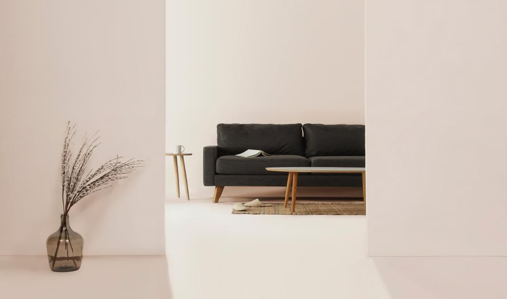
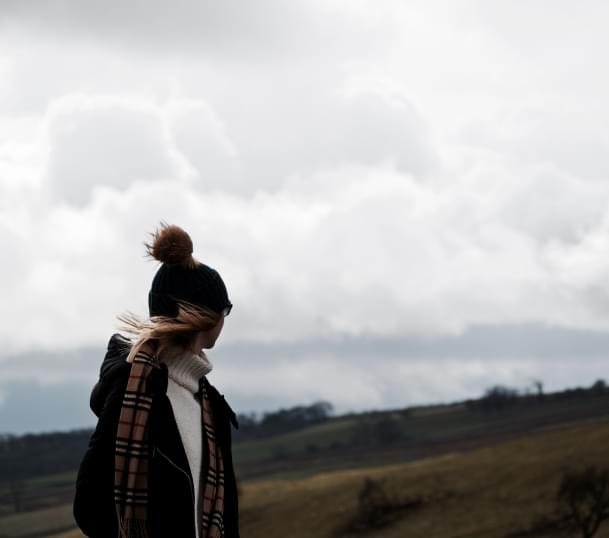
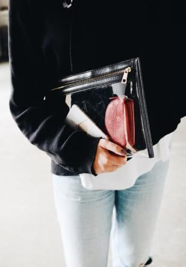

Mod Studio
Modern Web Studio
Biography
-Katya
Mills
Art Director
Scenography /
Styling /
Creative Photography /
Design
“The more I deal with the work as something that is my own, as something that is personal, the
more successful it is.”
Designers
- 
- 
Kameron Clein
LOUISSE RED
Testimonials
Website
Creativity
Creativity
I just really want
to do good
work and work
with some great
people, people
who challеnge
me.